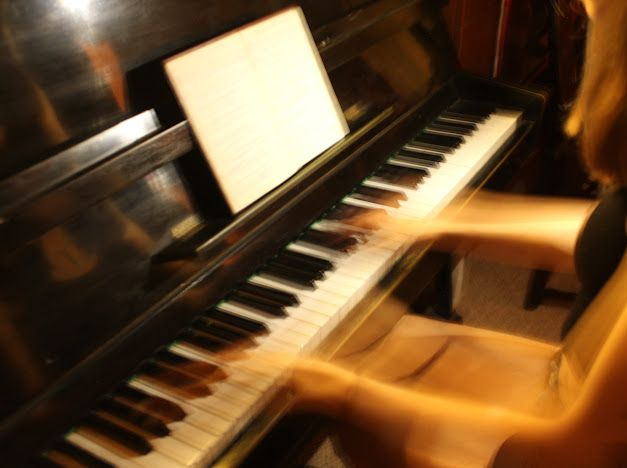
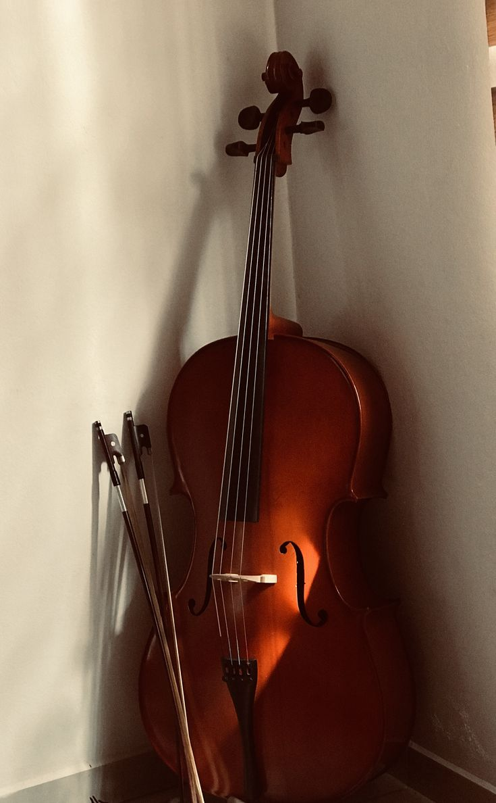
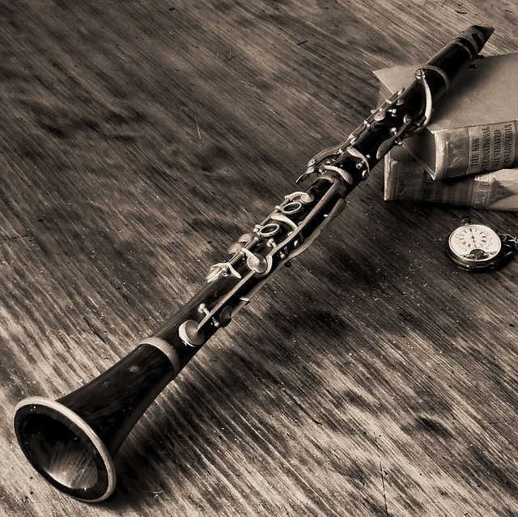
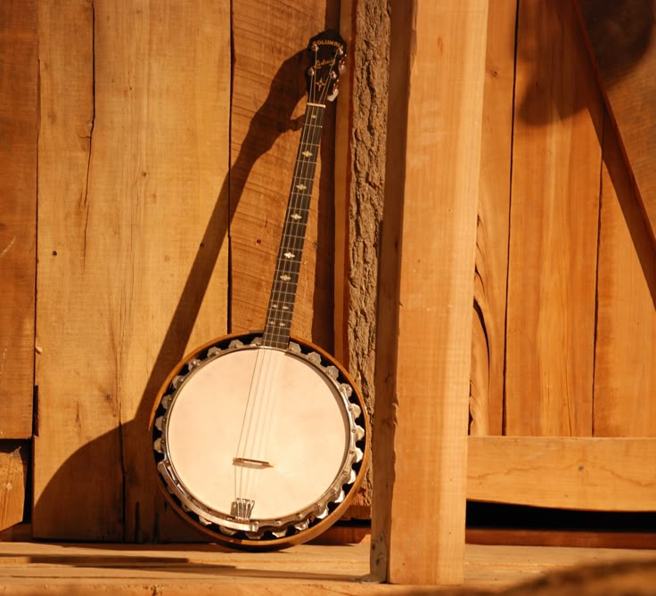
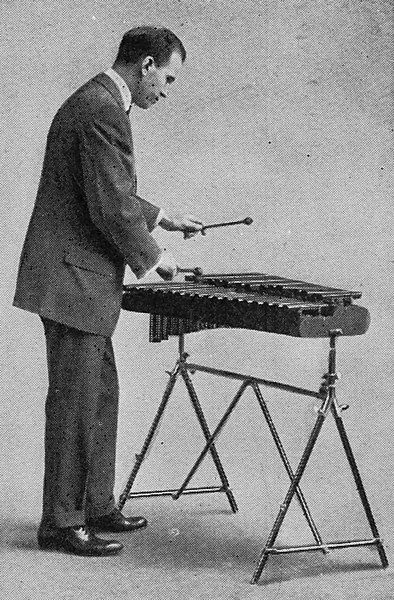
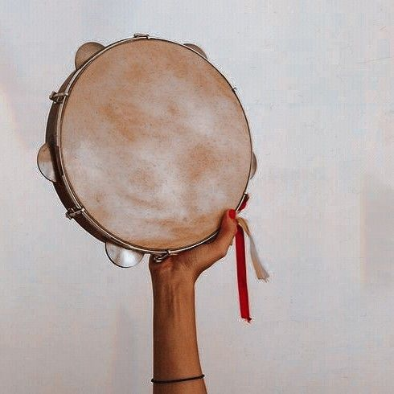

Piano
A classical keyboard instrument known for its versatility, emotional depth, and presence in nearly every music genre.

Guitar
One of the world's most recognizable instruments

Violin
A string instrument celebrated for its expressive range and central role in classical music.

Drums
Percussion instruments that provide rhythm and energy across cultures and genres.
Saxophone
A woodwind instrument known for its rich, expressive tone and versatility in various music genres.

Trumpet
A brass instrument celebrated for its bright, powerful sound and prominent role in jazz, classical, and popular music.

Harp
A string instrument known for its elegant appearance and ethereal sound.

Flute
A woodwind instrument known for its clear, melodious tone and versatility in various music genres.

Cello
A string instrument known for its rich, warm tone and central role in classical music.

Clarinet
A woodwind instrument known for its rich, warm tone and versatility in various music genres.

Banjo
A string instrument known for its distinctive sound and prominent role in folk and country music.
Accordion
A keyboard instrument known for its distinctive sound and prominent role in folk and traditional music.

Xylophone
A percussion instrument known for its bright, crystalline sound and prominent role in various music genres.
Lyre
A string instrument known for its elegant appearance and ethereal sound.

Tambourine
A percussion instrument known for its bright, crystalline sound and prominent role in various music genres.